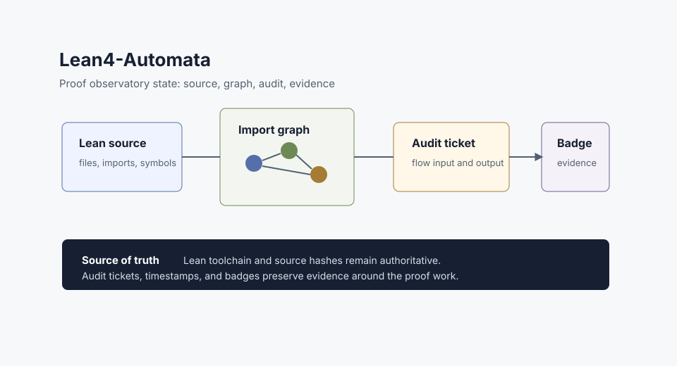

Local Observatory
Inspect Lean source, imports, symbols, theorem status, audit notes, and evidence records from one project-centered surface.
Lean 4 proof observability
A local proof observatory for Lean 4 projects. Map imports, search symbols, track proof completion, record audit tickets, and preserve evidence badges for work that should remain inspectable over time.

Lean4-Automata is designed for long-lived proof maintenance. It gives researchers and maintainers a structured way to inspect a Lean project before refactoring, publication, packaging, or evidence issuance.
Inspect Lean source, imports, symbols, theorem status, audit notes, and evidence records from one project-centered surface.
Start with two questions: what are you proving, and what should the main Lean target be?
Preserve audit outputs as project memory without confusing keepsake records with public certification.
The Lean toolchain, source files, and accepted declarations remain the authority for formal proof state.
Files, imports, Mathlib references, and external repositories become a navigable project model.
Audit summaries and optional companion maps support review. They do not replace Lean verification.
Follow direct and external imports before planning refactors or publication packaging.
Search names, declarations, modules, and theorem references from indexed project data.
Optional maps can help visualize formulas and structure, but they stay out of the formal proof chain.
Each audit run can record input, output, duration, status, and review context in a stable ticket shape.
Sorries, admits, axioms, import drift, and map gaps become inspectable work items.
Plain sectioned summaries sit beside JSON so humans and tools can read the same evidence.
A successful local audit output saved as project memory. It is not a public timestamp attestation.
Audit success plus confirmed OpenTimestamps evidence and matching obligation counts.
A public badge plus composite signature hash, subject to an explicit issuer policy.
The public page opens from disk and uses no remote CDN or private backend.
A read-only Space preview can explain the project and surface artifact links.
Operator dashboards stay local and offline-capable, separate from public claims.
Lean4-Automata separates formal proof from supporting evidence. It makes proof-adjacent records visible without claiming that a dashboard, badge, or timestamp proves mathematics by itself.
| Artifact | What it can mean | What it must not claim |
|---|---|---|
| Lean build | Lean accepted a project under a specific toolchain. | External peer review or publication acceptance. |
| Audit ticket | A named flow ran and produced structured output. | Every finding is resolved. |
| OTS stamp | A digest existed no later than a confirmed Bitcoin block. | Correctness, authorship, or mathematical truth. |
| L2BL4 badge | The stored evidence contract currently passes for its class. | A replacement for Lean verification. |
Wolfram companion maps are optional navigation and analysis aids. They may help visualize formulas, imports, or research structure, but they are not the source of formal truth.
The package now separates public presentation, static portability, Hugging Face preview, and internal operator tools.
Live project overview and workbench entry for local deployments.
frontend/appThis page can be opened directly from the filesystem or static hosting.
public/index.htmlLocal artifact navigation for maintainers outside the public web root.
ui/offline_internal.htmlapp.py provides a read-only Space-compatible presentation surface.
app.pyThe design contract records tabs, trust boundaries, and backup discipline.
docs/public-face-design-schema.mdL2BL4 evidence rules live in the schema, not in presentation copy.
README_DATABASE.md